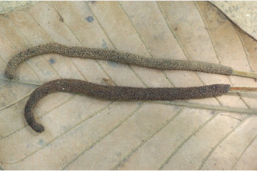
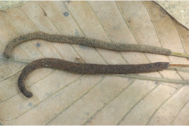

| Leaves : | Leaves simple , alternate , spiral , clustered at twigs end; stipules to 2.5 cm long, lanceolate , tawny hirsute , caducous , leaving annular scar ; petiole 1.3-3 cm long, stout, subterete or planoconvex , hirsute ; lamina 10-30.5 x 5-14 cm, usually ovate to broadly elliptic , apex subacute or shortly acuminate , base rounded or subacute , margin entire or undulate ( lobed when young), coriaceous , drying brown, densely hirsute beneath when young, later become glabrous except on midrib and nerves; midrib flat above; secondary_nerves 10-12 pairs, ascending; tertiary_nerves broadly reticulo-percurrent . |


 
